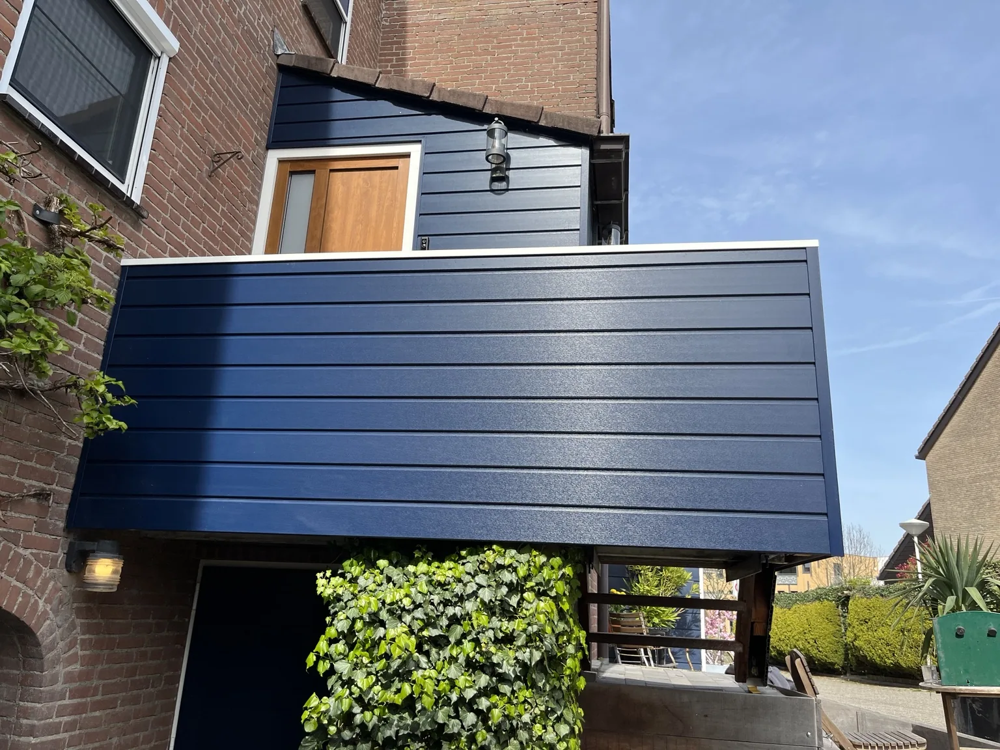
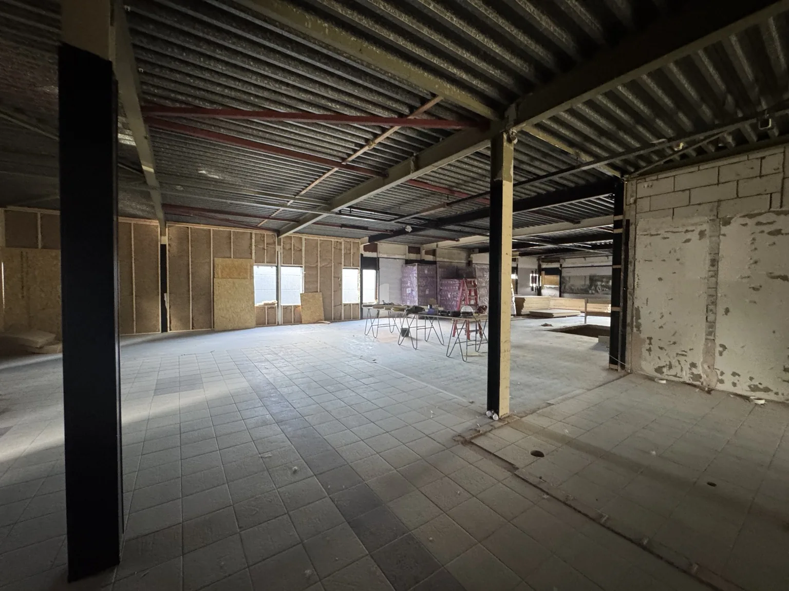
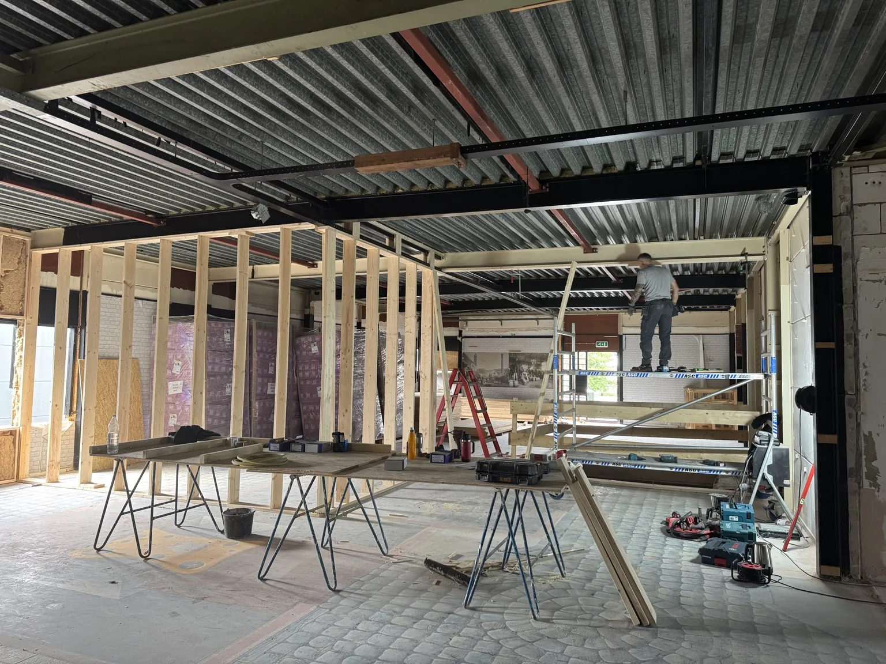
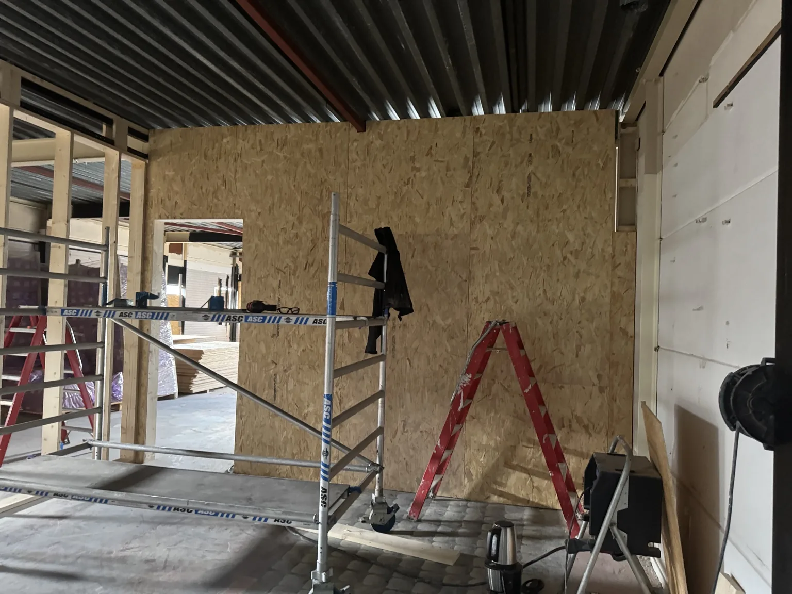

Project — Zoetermeer
Zoetermeer — ruwbouw en wandopbouw
Opbouw van nieuwe houten wanden, isolatie en OSB als stevige basis voor verdere afbouw.




Bij dit project is een grote open ruimte voorbereid voor verdere indeling en afbouw. Nieuwe houten wanden zijn opgebouwd en waar nodig versterkt met OSB-platen, zodat een stevige en duurzame basis ontstaat.
De foto’s laten verschillende fases van de ruwbouw zien: van open ruimte naar wandopbouw en technische voorbereiding. Dit soort werk vraagt om nauwkeurigheid, overzicht en een goede maatvoering.
Offerte aanvragen